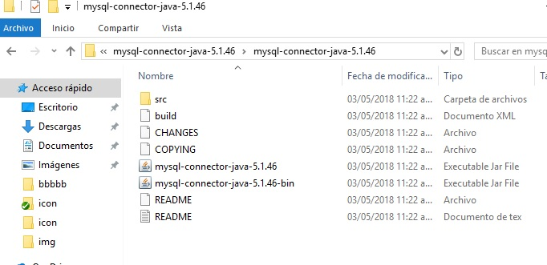

Java Connection to mysql
Welcome to our first tutorial FreakLearn: Carlos Gallegos, Have Fun!
What do we need and how to do a basic select to your database
Use any apache server I'll be using WAMP
Before starting, install:
So we start
Download MySQL connector
So we first need to get the jar file that its needed for the connection you can get it
In MySQL page in the part of connectors here: https://www.mysql.com/products/connector/
I asume you already have your apache server running ill be using WAMP
Depending on your option you will get a file like this:
And then you will see this jar file that we are going to import to our project:

Now in netbeans
We create a new Project Java-> Java Application (name the project whatever you want)
How to add a package:
Packages
And we add two packages:
- connect_mysql: for you to reuse in any other project we separate the connector
- practica1: only if you don’t already have it as a main page java file, here is where the app reads the file at start.
Import MySQL JAR
Let’s import the mysql-connector jar into our project; you right click in the libraries folder and you select add Jar/Folder option like so:
connect_mysql
In the package connect_mysql we created a file named connect.java where we are going to import the java.sql.*
library we just imported, in this file you got your connection that it’s going to use a driver,
the text written its default feel free to change any of the other parameters, user; your db user,
password and the url the first part leave it as it is then where you put the url in this case localhost:
and the port you can change it to your own url followed by the name of the database, all the first variables
are configuration to start the driver so we create the function connect to execute the connection and another
function named getCon to return the Connection, because we are going to use this class in other files your dile should look like this:
practica1
The package named practica 1 contains the main file Practica1.java; in that file you import the package you just created (connect_mysql) and the file you need in this case connect.java then you import the library from MySQL java.sql.* and then inside the main function you call the methods created for the consult and specify everything for it.
first we import our package and jar necesary for our connection
then we call the function to execute the connection and retrive the connection with get con at our statement and then we execute the query,
then we print our result in the console.

for last we see the result of our consult if any error it would be shown in the console too, now we see the consult printed.
we press run and see it work (I hope so)
Thanks for reading!!!
Have a break and a beer